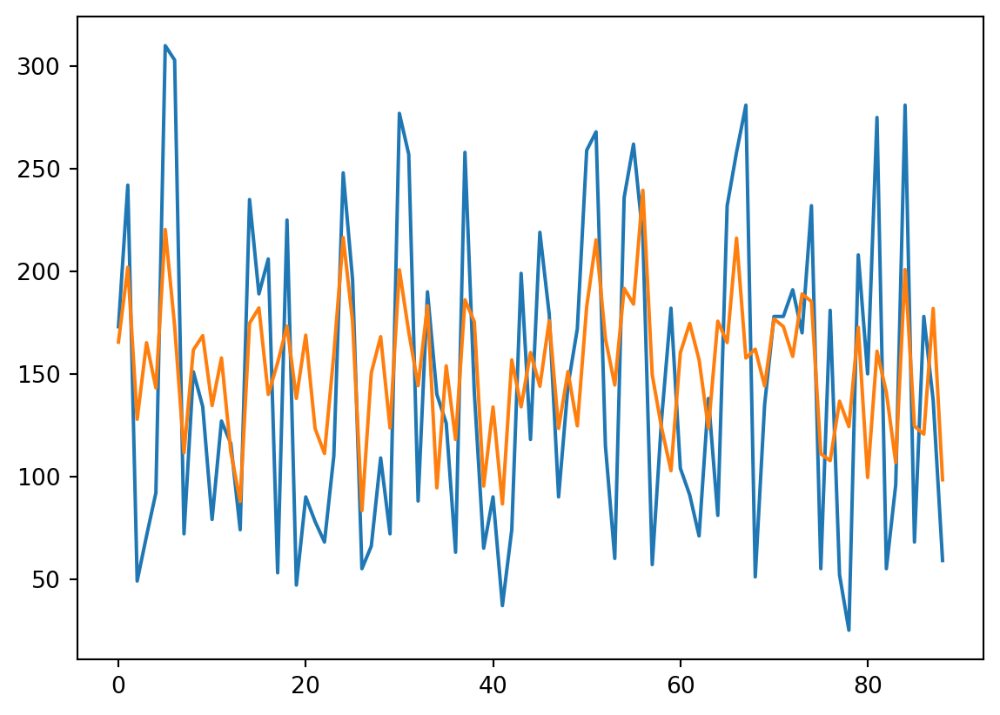
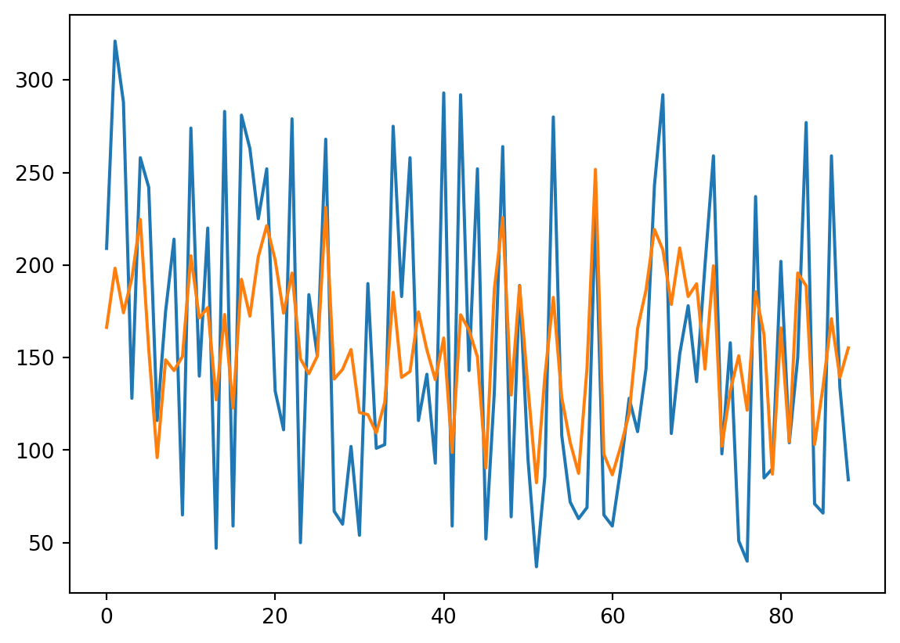

import numpy as np
import matplotlib.pyplot as plt
from sklearn.datasets import load_diabetes
from sklearn.metrics import mean_squared_error
from sklearn.model_selection import train_test_split
from sklearn.metrics import mean_squared_errorActivation Functions
# Heaviside step function
def heavyside(x):
if (x >= 0):
return 1
else :
return 0
# Rectified error Linear Unit function
def relu(x):
return max(0,x)
# Sigmoid function
def activation_sigmoid(t):
return 1/(1+np.exp(-t))
def sigmoid(x):
return 1/(1+np.exp(-x))
def softmax(t):
return np.exp(t)/np.sum(np.exp(t))
# Gassian error Linear Unit GeLU functionNeural Network
# Dataset
data = load_diabetes()
X = data['data']
y = data['target']
X_train, X_test, y_train, y_test = train_test_split(X,y,test_size=0.2)class NeuralNetwork :
def __init__(self):
self.layers_wieghts = []
self.layers_bias = []
self.layers_activations = []
def activation_sigmoid(self, t):
return 1/(1+np.exp(-t))
def activation_sigmoid_derivative(self, t):
return np.exp(-t)/(1+np.exp(-t))**2
def activation_relu(self,t):
return np.maximum(0,t)
def activation_relu_derivative(self,t):
return np.where(t <= 0, 0, 1)
def activation_identity(self,t):
return t
def activation_identity_derivative(self,t):
return 1
def loss(self, X_train, y_train):
y_hat = self.out(X_train)
return mean_squared_error(y_hat, y_train)
def loss_for_a_sample(self,x,y):
y_hat = self.out(x)
return np.mean((y_hat-y)**2)
def integrate_layer(self,layer_index, x):
out = self.layers_wieghts[layer_index]@x + self.layers_bias[layer_index]
if (self.layers_activations[layer_index] == 's'):
return self.activation_sigmoid(out)
elif (self.layers_activations[layer_index] == 'r'):
return self.activation_relu(out)
elif (self.layers_activations[layer_index] == 'i'):
return self.activation_identity(out)
def add_layer(self, layer_size, activation):
if len(self.layers_activations) == 0:
self.layers_wieghts.append(np.random.rand(layer_size, layer_size))
self.layers_bias.append(np.random.rand(layer_size))
self.layers_activations.append(activation)
else :
self.layers_wieghts.append(np.random.rand(layer_size, len(self.layers_bias[-1])))
self.layers_bias.append(np.random.rand(layer_size))
self.layers_activations.append(activation)
def update_weights(self, layer_index, delta_w):
self.layers_wieghts[layer_index] = self.layers_wieghts[layer_index] + delta_w
def update_bias(self, layer_index, delta_b):
self.layers_bias[layer_index] = self.layers_bias[layer_index] + delta_b
def delete_layer(self):
if len(self.layers) > 1:
self.layers.pop()
else :
print("No Hidden Layers to delete")
def derivative_of_activation_step(self,E, layer_index):
if self.layers_activations[layer_index] == 's':
return self.activation_sigmoid_derivative(E)
elif self.layers_activations[layer_index] == 'r':
return self.activation_relu_derivative(E)
elif self.layers_activations[layer_index] == 'i':
return self.activation_identity_derivative(E)
def backward(self, X_, y_, alpha):
activations = self.get_activations(X_)
l = len(self.layers_bias)
# Initiating with Output Layer
E_d = activations[l-1] - y_
E_d = E_d*self.derivative_of_activation_step(E_d, l-1)
delta_w = -(alpha/len(E_d))*2* E_d @ activations[l-2].T.reshape(-1, len(activations[l-2]))
delta_b = -(alpha/len(E_d))*2* E_d
delta_a_l = -alpha*2*E_d @ self.layers_wieghts[l-1]
delta_a_l = delta_a_l*self.derivative_of_activation_step(delta_a_l,l-1)
self.update_weights(l-1, delta_w)
self.update_bias(l-1, delta_b)
# print(activations)
# print("\n")
# Hidden Layers
for i in range(l-2,0,-1):
delta_w = -((alpha/len(delta_a_l))*2* delta_a_l).reshape(len(delta_a_l),1) @ activations[i-1].T.reshape(-1, len(activations[i-1]))
delta_b = -(alpha/len(delta_a_l))*2* delta_a_l
self.update_weights(i, delta_w)
self.update_bias(i, delta_b)
delta_a_l = -(alpha/len(delta_a_l))*2*delta_a_l @ self.layers_wieghts[i]
delta_a_l = delta_a_l*self.derivative_of_activation_step(delta_a_l,i)
# Input Layer
delta_w = -(alpha/len(delta_a_l))*2* delta_a_l.reshape(len(delta_a_l),1) @ X_.T.reshape(-1,len(X_))
delta_b = -(alpha/len(delta_a_l))*2* delta_a_l
self.update_weights(0, delta_w)
self.update_bias(0, delta_b)
def get_activations(self, X_):
l = len(self.layers_bias)
activations = []
previous_out = self.integrate_layer(0, X_).copy()
activations.append(previous_out)
for i in range(1,l):
current_out = self.integrate_layer(i,previous_out).copy()
previous_out = current_out.copy()
activations.append(previous_out)
return activations
def forward(self, X_):
l = len(self.layers_bias)
previous_out = self.integrate_layer(0, X_).copy()
for i in range(1,l):
current_out = self.integrate_layer(i,previous_out).copy()
previous_out = current_out.copy()
return previous_out
def train(self,alpha, X_train, y_train):
max_epochs = 1000
for e in range(max_epochs):
# out = self.predict(X_train)
# print(mean_squared_error(out,y_train),out[0])
for i in range(len(X_train)):
self.backward(X_train[i],y_train[i],alpha)
def predict(self, X_test):
n = len(X_test)
m = len(self.layers_bias[-1])
prediction = np.empty((n,m))
for i in range(n):
out = self.forward(X_test[i])
for j in range(m):
prediction[i][j] = out[j]
return predictionnn = NeuralNetwork()
nn.add_layer(10,'r')
nn.add_layer(1,'i')nn.forward(X_train[4])array([3.2008611])nn.train(0.0001, X_train, y_train) y_hat = nn.predict(X_test)# Plotting
sr = np.arange(len(y_test))
plt.plot(sr,y_test)
plt.plot(sr,y_hat)
plt.show()
mean_squared_error(y_hat, y_test)3789.3794191754478PyTorch Implementation
import torch
import torch.nn as nn
import torch.optim as optim# Dataset
data = load_diabetes()
X = data['data']
y = data['target']
X_train, X_test, y_train, y_test = train_test_split(X,y,test_size=0.2)
X_train = torch.tensor(X_train, dtype=torch.float32)
y_train = torch.tensor(y_train, dtype=torch.float32).reshape(-1, 1)
X_test= torch.tensor(X_test, dtype=torch.float32)
y_test = torch.tensor(y_test, dtype=torch.float32).reshape(-1, 1)
# Model
model = nn.Sequential(
nn.Linear(10, 12),
nn.ReLU(),
nn.Linear(12, 8),
nn.ReLU(),
nn.Linear(8, 1),
)
print(model)
# train the model
loss_fn = nn.MSELoss()
optimizer = optim.Adam(model.parameters(), lr=0.001)
n_epochs = 100
batch_size = 10
for epoch in range(n_epochs):
for i in range(0, len(X_train), batch_size):
Xbatch = X_train[i:i+batch_size]
y_pred = model(Xbatch)
ybatch = y_train[i:i+batch_size]
loss = loss_fn(y_pred, ybatch)
optimizer.zero_grad()
loss.backward()
optimizer.step()
print(f'Finished epoch {epoch}, current loss {loss}')Sequential(
(0): Linear(in_features=10, out_features=12, bias=True)
(1): ReLU()
(2): Linear(in_features=12, out_features=8, bias=True)
(3): ReLU()
(4): Linear(in_features=8, out_features=1, bias=True)
)
Finished epoch 0, current loss 24461.0625
Finished epoch 1, current loss 24431.712890625
Finished epoch 2, current loss 24398.048828125
Finished epoch 3, current loss 24355.734375
Finished epoch 4, current loss 24296.548828125
Finished epoch 5, current loss 24212.166015625
Finished epoch 6, current loss 24095.203125
Finished epoch 7, current loss 23938.404296875
Finished epoch 8, current loss 23727.669921875
Finished epoch 9, current loss 23456.560546875
Finished epoch 10, current loss 23121.474609375
Finished epoch 11, current loss 22719.4609375
Finished epoch 12, current loss 22248.814453125
Finished epoch 13, current loss 21709.259765625
Finished epoch 14, current loss 21102.046875
Finished epoch 15, current loss 20429.998046875
Finished epoch 16, current loss 19697.513671875
Finished epoch 17, current loss 18910.548828125
Finished epoch 18, current loss 18076.54296875
Finished epoch 19, current loss 17204.318359375
Finished epoch 20, current loss 16303.89453125
Finished epoch 21, current loss 15386.296875
Finished epoch 22, current loss 14463.2724609375
Finished epoch 23, current loss 13546.9833984375
Finished epoch 24, current loss 12649.65234375
Finished epoch 25, current loss 11783.171875
Finished epoch 26, current loss 10958.6904296875
Finished epoch 27, current loss 10186.2041015625
Finished epoch 28, current loss 9474.1728515625
Finished epoch 29, current loss 8829.1630859375
Finished epoch 30, current loss 8255.5966796875
Finished epoch 31, current loss 7755.56591796875
Finished epoch 32, current loss 7328.80712890625
Finished epoch 33, current loss 6972.79052734375
Finished epoch 34, current loss 6682.978515625
Finished epoch 35, current loss 6453.185546875
Finished epoch 36, current loss 6276.05908203125
Finished epoch 37, current loss 6143.60791015625
Finished epoch 38, current loss 6047.716796875
Finished epoch 39, current loss 5980.62060546875
Finished epoch 40, current loss 5935.27099609375
Finished epoch 41, current loss 5905.58447265625
Finished epoch 42, current loss 5886.5546875
Finished epoch 43, current loss 5874.25390625
Finished epoch 44, current loss 5865.75439453125
Finished epoch 45, current loss 5858.984375
Finished epoch 46, current loss 5852.56640625
Finished epoch 47, current loss 5845.65625
Finished epoch 48, current loss 5837.79833984375
Finished epoch 49, current loss 5828.80078125
Finished epoch 50, current loss 5818.64208984375
Finished epoch 51, current loss 5807.39990234375
Finished epoch 52, current loss 5795.20458984375
Finished epoch 53, current loss 5782.20166015625
Finished epoch 54, current loss 5768.54150390625
Finished epoch 55, current loss 5754.36376953125
Finished epoch 56, current loss 5739.78271484375
Finished epoch 57, current loss 5724.8984375
Finished epoch 58, current loss 5709.79541015625
Finished epoch 59, current loss 5694.53759765625
Finished epoch 60, current loss 5679.18115234375
Finished epoch 61, current loss 5663.76171875
Finished epoch 62, current loss 5648.31103515625
Finished epoch 63, current loss 5632.85302734375
Finished epoch 64, current loss 5617.40380859375
Finished epoch 65, current loss 5601.97509765625
Finished epoch 66, current loss 5586.576171875
Finished epoch 67, current loss 5571.21240234375
Finished epoch 68, current loss 5555.89013671875
Finished epoch 69, current loss 5540.60546875
Finished epoch 70, current loss 5525.36767578125
Finished epoch 71, current loss 5510.171875
Finished epoch 72, current loss 5495.0234375
Finished epoch 73, current loss 5479.91650390625
Finished epoch 74, current loss 5464.85400390625
Finished epoch 75, current loss 5449.83740234375
Finished epoch 76, current loss 5434.85986328125
Finished epoch 77, current loss 5419.92626953125
Finished epoch 78, current loss 5405.03564453125
Finished epoch 79, current loss 5390.18505859375
Finished epoch 80, current loss 5375.376953125
Finished epoch 81, current loss 5360.6103515625
Finished epoch 82, current loss 5345.88525390625
Finished epoch 83, current loss 5331.19921875
Finished epoch 84, current loss 5316.55322265625
Finished epoch 85, current loss 5301.95068359375
Finished epoch 86, current loss 5287.38720703125
Finished epoch 87, current loss 5272.8662109375
Finished epoch 88, current loss 5258.38525390625
Finished epoch 89, current loss 5243.94580078125
Finished epoch 90, current loss 5229.54833984375
Finished epoch 91, current loss 5215.1923828125
Finished epoch 92, current loss 5200.87939453125
Finished epoch 93, current loss 5186.60986328125
Finished epoch 94, current loss 5172.38232421875
Finished epoch 95, current loss 5158.20068359375
Finished epoch 96, current loss 5144.06201171875
Finished epoch 97, current loss 5129.96923828125
Finished epoch 98, current loss 5115.919921875
Finished epoch 99, current loss 5101.91845703125y_hat = model(X_test)# Plotting
sr = np.arange(len(y_test))
plt.plot(sr, np.array(y_test))
plt.plot(sr,y_hat.detach().numpy())
plt.show()